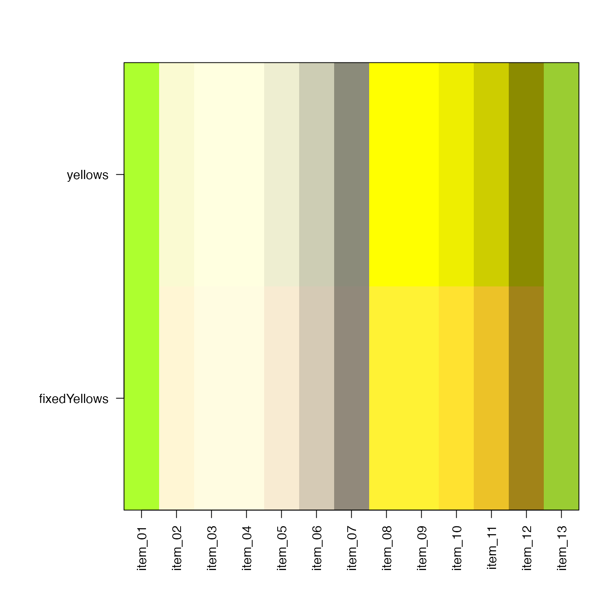

Fix yellow color to be less green than default "yellow"
fixYellow(col, Hrange = c(80, 90), Hshift = -15, fixup = FALSE, ...)
| col | R color, either in hex color format or using values from
|
|---|---|
| Hrange | numeric vector whose range defines the region of hues
to be adjusted. By default hues between 80 and 90 are adjusted. If
NULL, |
| Hshift | numeric value length one, used to adjust the hue of colors
within the range |
| ... | additional arguments are passed to |
returns a vector of R colors the same length as input col.
In the event col, Hrange, or Hshift have length 0, or if any
step in the conversion produces length 0, then the
original col is returned.
This function "fixes" the color yellow, which by default appears green especially when darkened. The effect of this function is to make yellows appear more red, which appears more visibly yellow even when the color is darkened.
This function is intended to be tolerant to missing values. For example if
any of the values col, Hrange, or Hshift are length 0, the original
col is returned unchanged.
Other jam practical functions: applyCLrange,
breakDensity, checkLightMode,
colNum2excelName, exp2signed,
fileInfo, fixYellowHue,
getAxisLabel, handleArgsText,
isFALSEV, isTRUEV,
jamba, jargs,
kable_coloring, log2signed,
make_styles, mergeAllXY,
minorLogTicks, newestFile,
printDebug, renameColumn,
rmInfinite, rmNA,
rmNULL, sclass,
sdim, setCLranges,
setPrompt, ssdim
Other jam color functions: alpha2col,
applyCLrange, col2alpha,
col2hcl, col2hsv,
color2gradient, fixYellowHue,
getColorRamp, hcl2col,
hsv2col, isColor,
kable_coloring,
makeColorDarker, make_styles,
rgb2col, setCLranges,
setTextContrastColor,
showColors, unalpha,
warpRamp
yellows <- vigrep("yellow", colors()); fixedYellows <- fixYellow(yellows); showColors(list(yellows=yellows, fixedYellows=fixedYellows));